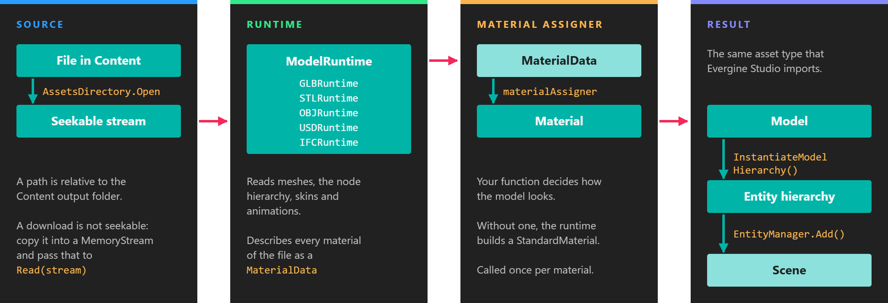

Runtimes

The Runtimes are a family of NuGet packages that load assets while the application runs, straight from their original file formats. Assets in the Content folder of a project are imported and converted by Evergine Studio at build time; the runtimes cover everything else: models downloaded from a server, drawings picked by the user, photos from a web service, or videos that change after you publish the application.
Each runtime is a separate package, so an application only carries the readers and the native dependencies it uses.
Available runtimes
| Runtime | Package | Formats | Returns | Platforms |
|---|---|---|---|---|
| GLB | Evergine.Runtimes.GLB |
Binary glTF 2.0 (.glb), including Draco compression |
Model |
All |
| STL | Evergine.Runtimes.STL |
Binary and ASCII .stl |
Model |
All |
| OBJ | Evergine.Runtimes.OBJ |
.obj with .mtl materials |
Model |
All |
| USD | Evergine.Runtimes.USD |
.usd, .usda, .usdc, .usdz |
Model |
Windows |
| Images | Evergine.Runtimes.Image |
PNG, JPEG, BMP, WebP, GIF, KTX, KTX2 | Texture |
All |
| CAD | Evergine.Runtimes.CAD |
.dwg, .dxf |
Entity |
Windows |
| IFC | Evergine.Runtimes.IFC |
.ifc (IFC2x3, IFC4) |
Model |
Windows |
| Videos | Evergine.Runtimes.Video |
Formats supported by FFmpeg 7.1 | VideoPlayer component |
Windows x64 |
On the web, the runtimes that decode images (GLB, OBJ and Images) need one extra package; see Web projects.
The runtimes that return a Model derive from ModelRuntime (namespace Evergine.Framework.Runtimes). You turn the model into entities with InstantiateModelHierarchy, exactly as with a model imported by Evergine Studio. The CAD runtime builds the entity itself, and the video runtime is a component you add to an entity.
How each runtime reads
| Runtime | File path | Stream | Material assigner | Main dependencies |
|---|---|---|---|---|
| GLB | Relative to Content |
Seekable stream | Yes | Evergine.Bindings.Draco, Image runtime |
| STL | Relative to Content |
Seekable stream | Yes | None |
| OBJ | Relative to Content |
Seekable stream; materials resolved from WorkingDirectory |
Yes | Image runtime |
| USD | Relative to Content, or absolute |
Not supported | Yes | CSnakes, embedded Python 3.12.6, usd-core, Image runtime |
| Images | Relative to Content |
Any readable stream (seekable recommended) | Not applicable | SkiaSharp 3.119.2 |
| CAD | Relative to Content, or absolute |
Seekable stream, copied to a temporary file | No | ACadSharp 3.4.9 |
| IFC | Relative to Content, or absolute |
Any readable stream, copied to a temporary file | Accepted but not used | xBIM Toolkit (Windows native geometry) |
| Videos | Relative to Content, or absolute |
Not supported | Not applicable | FFmpeg 7.1 (bundled for Windows x64) |
Every runtime exposes a ready-to-use singleton in its Instance field (GLBRuntime.Instance, ImageRuntime.Instance, and so on) that resolves the graphics context and the assets service from the application container on first use.
Choose the runtime from the file extension
Every ModelRuntime reports the extension it reads in Extension (for example ".glb" and ".stl"), and exposes the stream overload of Read through the base class. That lets one code path handle several formats:
private readonly Dictionary<string, ModelRuntime> loaders = new Dictionary<string, ModelRuntime>
{
{ GLBRuntime.Instance.Extension, GLBRuntime.Instance },
{ STLRuntime.Instance.Extension, STLRuntime.Instance },
};
private Task<Model> ReadAnyModel(string fileName, Stream stream)
{
var extension = Path.GetExtension(fileName).ToLowerInvariant();
if (!this.loaders.TryGetValue(extension, out var runtime))
{
throw new NotSupportedException($"No runtime reads {extension} files.");
}
return runtime.Read(stream);
}
The OBJ, USD and IFC runtimes also derive from ModelRuntime. Check the table above for the stream support each one offers before adding it to such a dictionary: the USD runtime, for example, only reads from a file path.
Where the files come from
Files shipped with the application. A file in the project's Content folder is imported by Evergine Studio and exported in the Evergine asset format, which a runtime cannot read. Mark it with Set to export as raw in the Assets Details panel: raw assets are copied unchanged, with their name and folder, so Content/Models/robot.glb is read with the path Models/robot.glb. See also Raw assets loading.
Files anywhere on disk. The GLB, STL, OBJ and Image runtimes only accept paths relative to Content. For other files, open a FileStream with File.OpenRead and use the stream overload. The USD, CAD, IFC and video runtimes also accept absolute paths.
Downloads. Download with HttpClient, then pass the data to the stream overload. A network stream cannot seek, so copy it into a MemoryStream first for the runtimes that need a seekable stream. For USD and video, which only read files, save the download to a temporary file and pass its absolute path. Every runtime page has a complete example.
Important
The Read methods are asynchronous, and code after an await on a download can continue on a thread-pool thread. Add the loaded entities to the scene on the Evergine main thread, for example with await EvergineForegroundTask.Run(() => this.Managers.EntityManager.Add(entity)) (namespace Evergine.Framework.Threading).